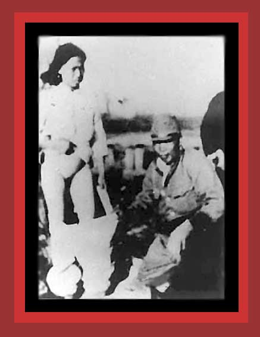

| This photo of the Rape of Nanjing shows a young women being assaulted by a Japanese soldier. Rape probably followed, and murder thereafter. As a reward for capturing a city or town, the Japanese officers often gave their soldiers several days of freedom to loot, rape, and kill. For documentation on Japan's murder of near 4,000,000 Chinese during the Sino-Japanese War (which in 1941 merged into World War II) and the Nanjing massacres, see China's Bloody Century Source: "Alliance in Memory of Victims of the Nanjing massacre." For a background on the photo, see a previous photograph. |